XERF 400샷 ₩990,000 이벤트 · 랜딩 2종, 이미지 소재 6종, 영상 소재 3편입니다.
XERF 400 shots for ₩990,000 — two landing pages, six image ads and three video ads.
같은 광고를 두 랜딩에 나눠 보내고 상담 버튼 클릭 수로 비교합니다. 두 랜딩 모두 문의는 WhatsApp·Instagram DM 버튼으로만 받습니다.
The same ads go to both pages and we compare chat-button clicks. Both pages take enquiries only through the WhatsApp and Instagram DM buttons.
가격을 먼저 보여 주고 병원·의료진·위치를 소개합니다.
Price first, then the clinic, doctor and location.
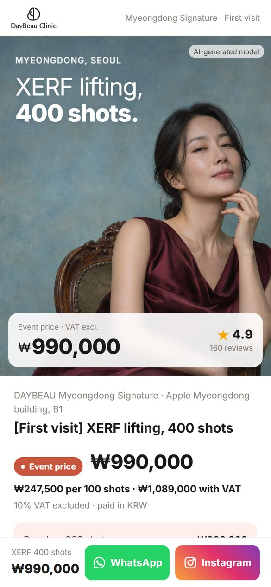
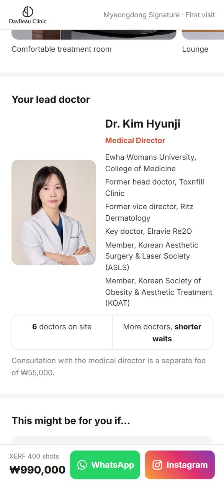
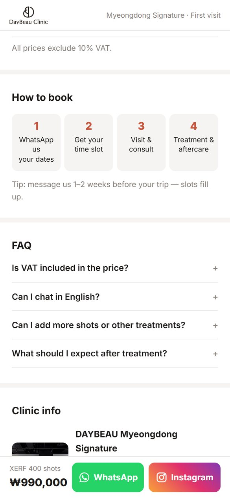
XERF 시술 설명·실제 시술 과정·이벤트 마감을 중심으로 보여 줍니다.
What XERF is, the real treatment steps and the event deadline.
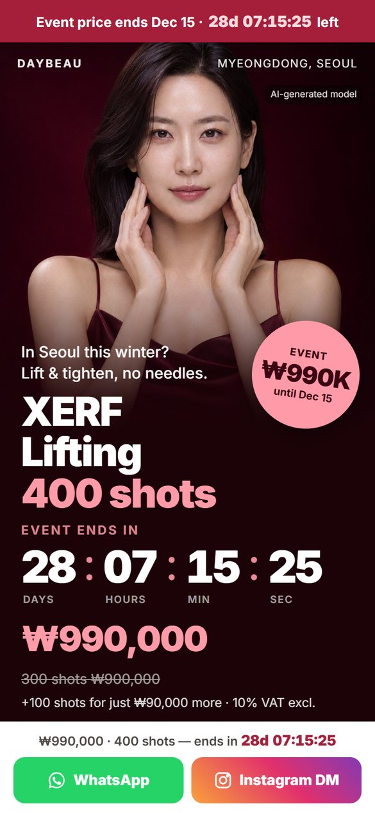
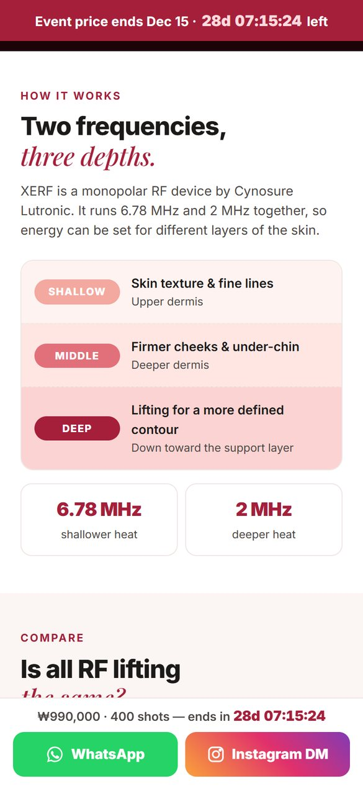
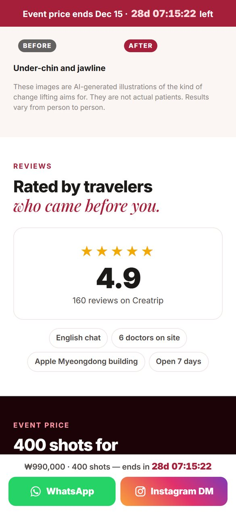
| A. 병원형 Clinic-led | B. 시술형 Treatment-led | |
|---|---|---|
| 첫 화면 First screen | 화보 모델 + ₩990,000 + 리뷰 평점 | 화보 모델 + XERF Lifting 400 shots + 마감 카운트다운 |
| 본문 Body | 이벤트가 → 병원 내부 → 대표원장 → 가격표 → 예약 순서 → 위치 | 고민 → XERF 설명·원리 → 일반 RF 비교 → 실제 시술 과정 → 전후 → 평점 → 이벤트가 |
| 마감 Deadline | 「예고 없이 종료될 수 있음」 문구 | 12월 15일 마감, 남은 시간 표시 |
| 문의 Enquiry | WhatsApp · Instagram DM 버튼 (화면 아래에 계속 표시) | |
가격은 원화(KRW)로만 표기했습니다. 모델 사진은 AI로 만들었고 소재 아래에 표기했습니다. 누르면 크게 볼 수 있습니다.
Prices are shown in KRW only. Model photos are AI-generated and labelled on each ad. Tap to view full size.
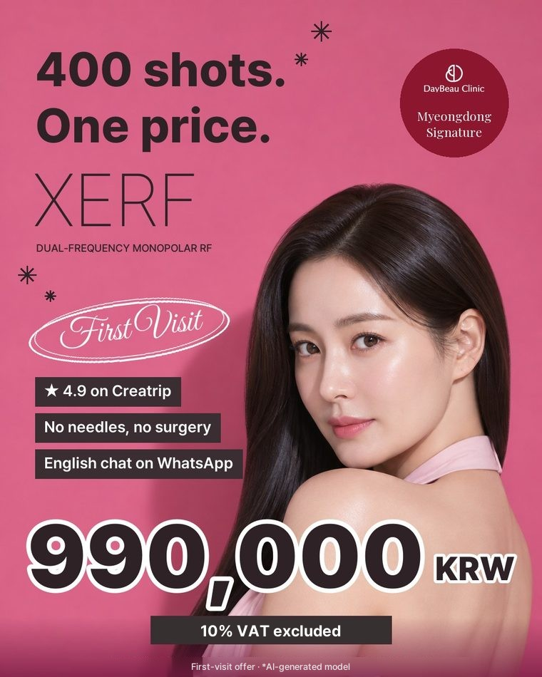
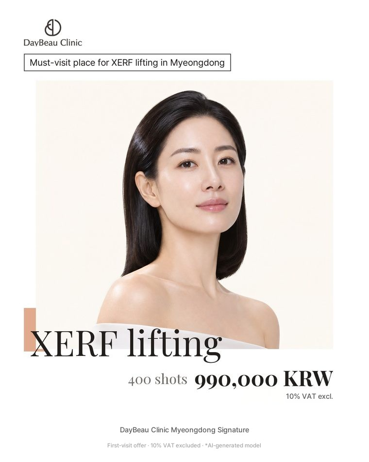
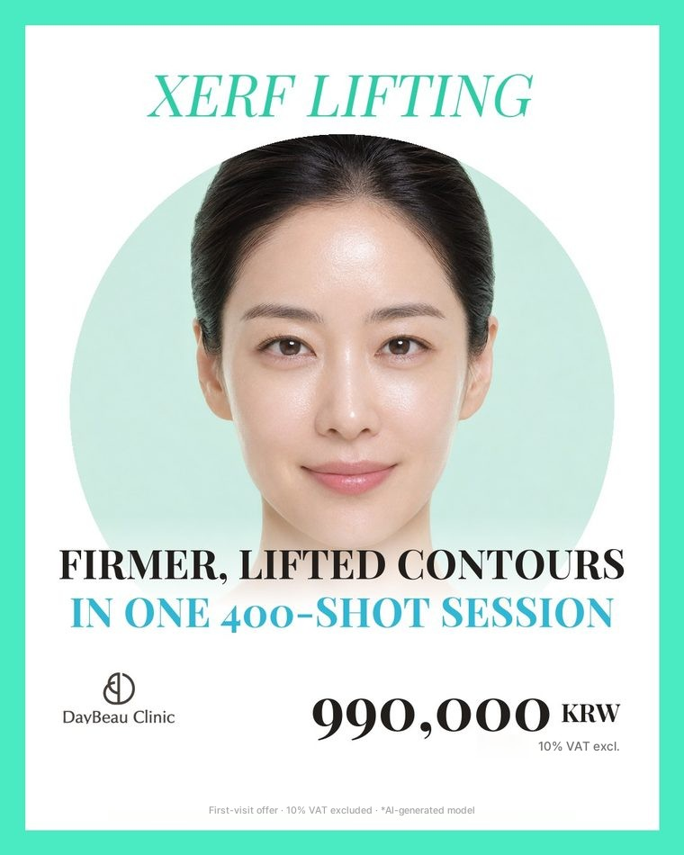
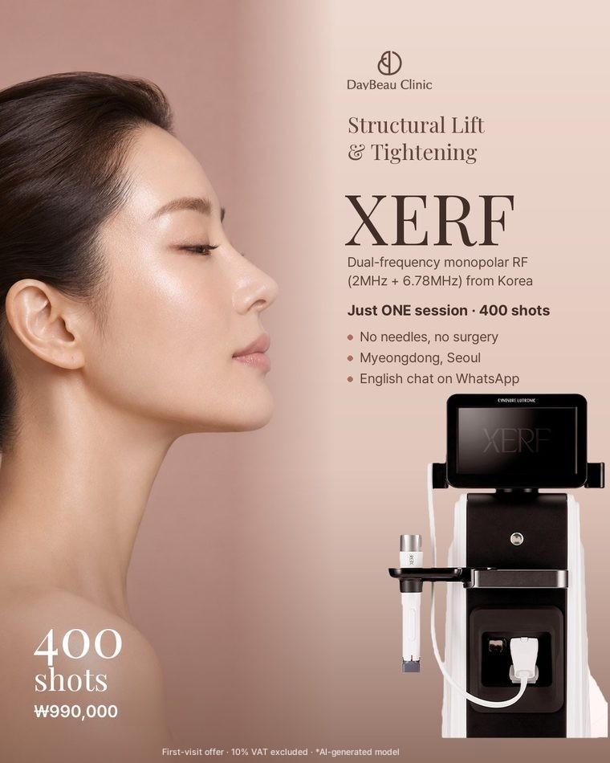
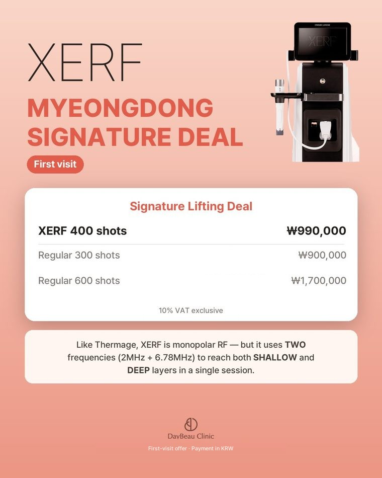
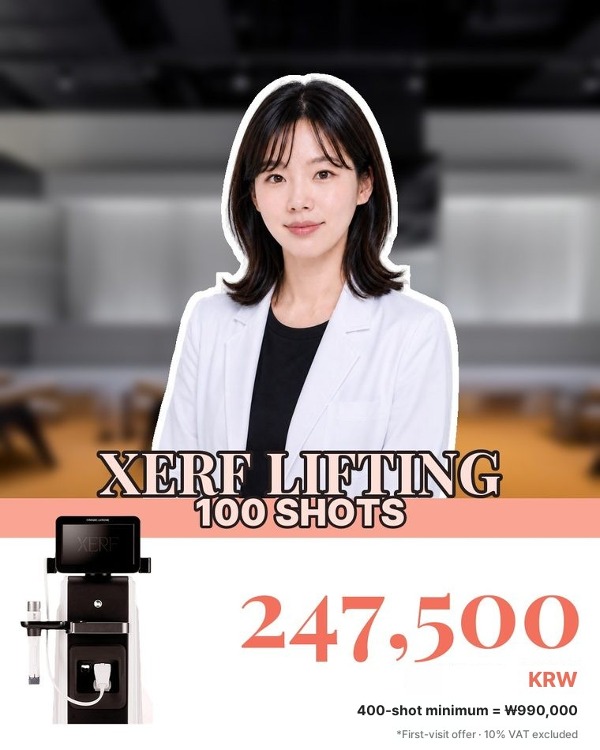
11월 14일 명동점에서 촬영한 영상으로 만들었습니다. 나레이션·자막은 영어입니다.
Made from the footage filmed at the Myeongdong clinic on Nov 14. English voice-over and captions.
방문 후기 형식 · Visit vlog
26초 · 26s시술 과정 형식 · Treatment walkthrough
29초 · 29s시술 과정 형식, 소개 인트로 · Walkthrough with intro
25초 · 25s